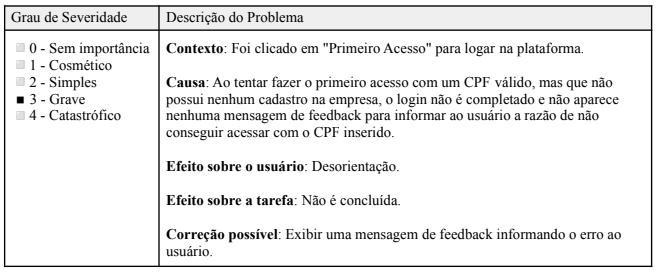
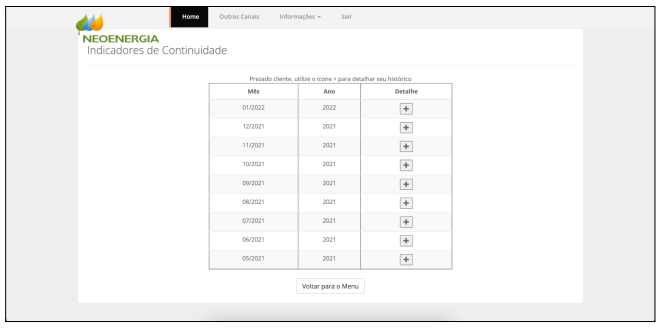
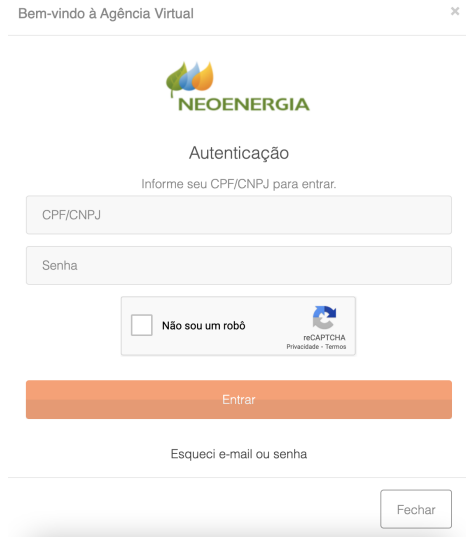
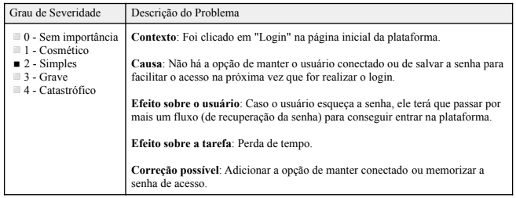
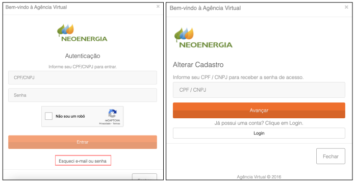

Agência Virtual NeoEnergia
Introdução
A seguir será apresentado todos os dados coletados por meio da inspeção realizada pela avaliadora Clara Marcelino Ribeiro de Sousa.
Dados Coletados
1. Visibilidade do status do sistema
A seguir pode ser verificado o problema 1 encontrado na tela apresentada na Figura 1. A análise detalhada do problema está documentada na Tabela 1:

Figura 1
Verificação: o usuário é informado pelo sistema em tempo razoável sobre o que está acontecendo?

Tabela 1: Formulário do problema 1
2. Compatibilidade do sistema com o mundo real
Verificação: o sistema fala a linguagem do usuário utilizando palavras, frases, conceitos familiares a ele, em vez de termos orientados ao sistema?
Sim, o sistema utiliza linguagem compatível com o mundo real e de fácil entendimento
3. Controle do usuário e liberdade
Verificação: fornece maneiras de permitir que o usuário saia facilmente de lugares inesperados em que se encontram, utilizando "saídas de emergência" claramente identificadas?
Sim, em todas as páginas de um serviço específico, há a opção de retornar ao menu, como é possível observar na Figura 2 abaixo.

Figura 2
4. Consistência e padrões
Verificação: evita fazer com que o usuário tenha que pensar se palavras, situações ou ações diferentes significam a mesma coisa?
Sim, o site segue um mesmo padrão em todas as páginas, o que facilita a navegação.
5. Ajuda o usuário a reconhecer, diagnosticar e recuperar-se de erros
Verificação: utiliza linguagem simples para descrever a natureza do problema e sugere uma maneira de resolvê-lo?
Sim. Um bom exemplo é na tela de login, em que é informado caso o CPF inserido seja inválido. Também há a opção de recuperação de senha.
6. Prevenção de erros
A seguir pode ser verificado o problema 2 encontrado na tela apresentada na Figura 3. A análise detalhada do problema está documentada na Tabela 2:

Figura 3
Verificação: onde possível, impede a ocorrência de erros?

Tabela 2: Formulário do problema 2
7. Reconhecimento em vez de memorização
Verificação: tornar objetos, ações e opções visíveis?
Sim, o site deixa os seus serviços bem visíveis em diversos espaços como pode ser notado na Figura 4 e 5 abaixo.

Figura 4

Figura 5
8. Flexibilidade e eficiência de uso
Verificação: fornece aceleradores invisíveis aos usuários inexperientes, os quais, no entanto, permitem aos mais experientes realizar tarefas com mais rapidez?
A seguir pode ser verificado o problema 1 desta heurística encontrado na tela apresentada na Figura 6. A análise detalhada do problema está documentada na Tabela 3:

Figura 6

Tabela 3: Formulário do problema 1 da heurísitica 8
A seguir pode ser verificado o problema 2 desta heurística encontrado na tela apresentada na Figura 7 e 8. A análise detalhada do problema está documentada na Tabela 4:

Figura 7
Figura 8

Tabela 4: Formulário do problema 2 da heurísitica 8
9. Estética e design minimalista
Verificação: evita o uso de informações irrelevantes ou raramente necessárias.
Sim, não há excesso de informações nas páginas.
10. Ajuda e documentação
Verificação: fornece informações que podem ser facilmente encontradas e ajuda mediante passos que podem ser facilmente seguidos?
Sim, há diversos conteúdos sobre o uso do sistema como pode notado na Figura 9 abaixo.

Figura 9
Bibliografia
Nielsen, Jakob (1994). Usability Engineering. Morgan Kaufmann Publishers Inc., San Francisco, CA, USA.
BARBOSA, Simone. Avaliação Heurística. In: INTERAÇÃO Humano-Computador e Experiência do Usuário. [S. l.: s. n.], 2021. cap. 12, p. 282.
MACIEL, Cristiano; NOGUEIRA, José Luis; CIUFFO, Leandro; GARCIA, Ana Cristina. Avaliação Heurística de Sítios na Web. [S. l.]
Tabela de Versionamento
| Data | Versão | Descrição | Autor | Revisor |
|---|---|---|---|---|
| 16/07/2022 | 0.1 |
Criação da página de Avaliação da Agência Virtual | Natan Santana | Clara Ribeiro |